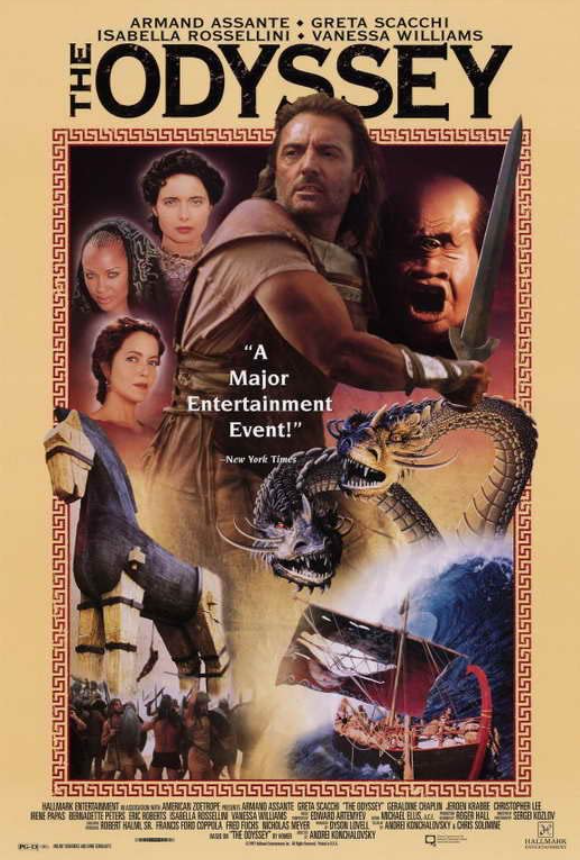
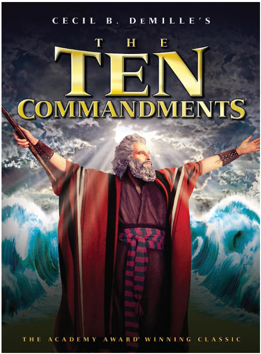
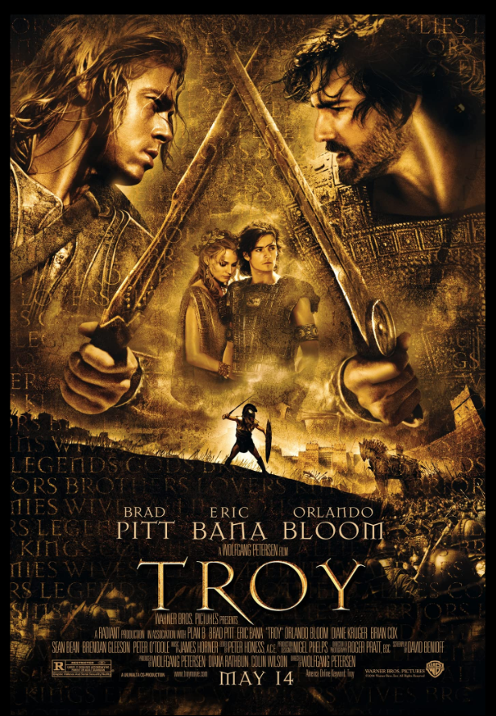

This is my favorite movie of all time. The story and Troy, Aquiles and
Helen of troy are very captivating

This movie is a very intriguing movie because it is base of one of the Bible stories.
A must watch in my opinion.

This movie is a must watch if you are into Greek Mythology.
The precual to The Oddyssey, Aquiles and the Troyan war
will keep you entertain for a couple of hours.